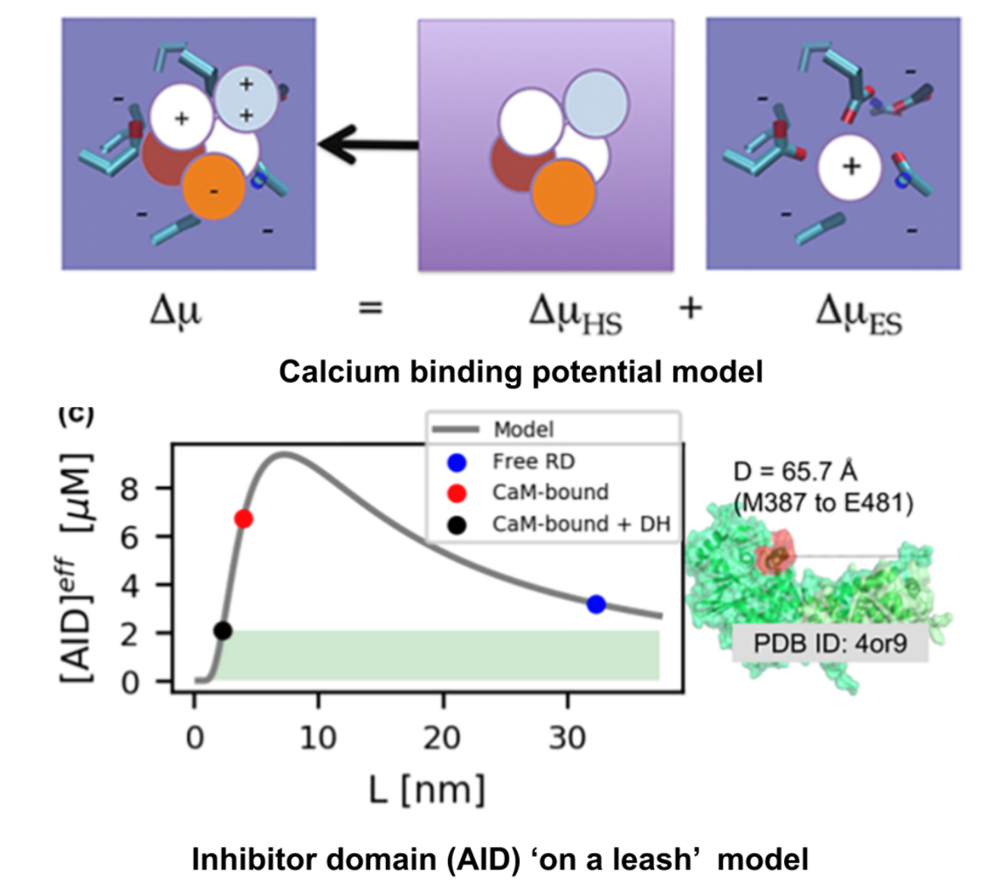

Investigating molecular control of cell function
with simulation and experiment
Our lab determines how molecules and proteins shape the functions of immune and heart cells by blending computational and experimental methods.
We're on an exciting journey investigating molecular mechanisms underlying chronic pain, Alzheimer's, anti-tumor therapies, and cardiac arrhythmias.
We specialize in probes of calcium-dependent proteins like troponin C and calmodulin using advanced techniques such as molecular simulations and live-cell imaging.
Experimental validations, including enzyme kinetics and cell microscopy, bring our findings to life.
Our diverse team is highly interdisciplinary and collaborates globally, thereby creating an environment for groundbreaking discoveries.

Current Projects
Engineering proteins to control calcium signal transduction
Calcium is a molecule that proteins use to communicate and perform work. When calcium regulation is disrupted in cells it can lead to various diseases like Alzheimer's and chronic pain. To address this issue, my lab has been researching how to engineer calcium-binding proteins to counteract disrupted calcium signaling. However, engineering these proteins has been a challenging and largely ineffective process, despite the availability of abundant structural data of these proteins. Our hypothesis is that by controlling the changes in structure or solvent-exposed surface that occur during calcium binding, we can significantly modify calcium affinity, even if not the binding kinetics. To tackle this challenge, we are using an innovative approach that combines statistical physics models of ion binding and protein interactions with 3-D protein structures, binding poses, and interaction energies obtained from molecular simulations at the atomic level. We are complementing these studies with traditional cell biology to investigate the function of the engineered proteins. Our related publications can be found here

We have developed statistical physics models to predict the activity of a calcium-dependent phosphatase (calcineurin) involved in gene regulation